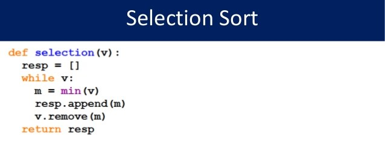
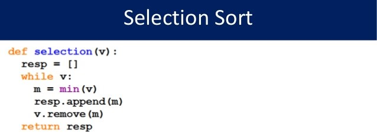
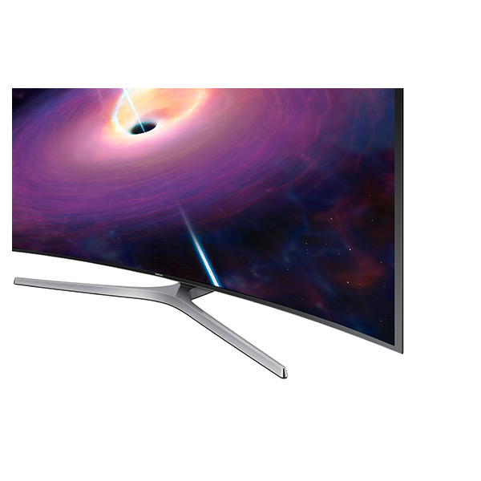
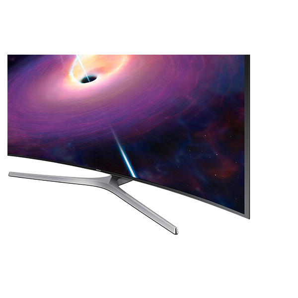
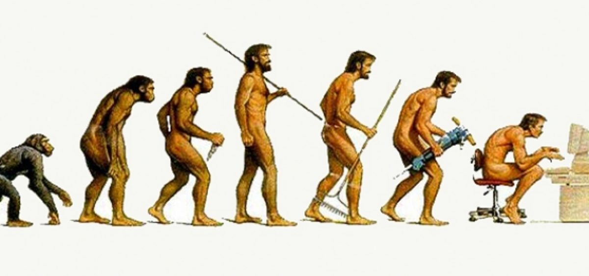

HACKERS
The Invention of the Mouse
- A hand-held pointing device that used a ball to detect motion and displays this motion onto a 2D graphical user interface.
- First Displayed in 1968

1950s Jobs In Computer Science
- People at this time did not have as many resources as what we have today
- Many people were developing new softwares, programming languages, hardware, and algorithms
- People were basically hired to either develop something, which is similar to today
 

What People in the Computer Science Industry Do
- They create things!
- 1951: The first real-time computer was build for the US Air Defense. It let you interact with it
- 1954: FORTRAN --> a high-level programming langauge using a compiler
- 1956: The first conference on AI was held
- 1958: LISP --> a list-processing language for artificial intelligence programming
- 1959: COBOL --> a business oriented language was created

Network Television Comparison
 

- Back then there were really only three constant channels on the television: ABC, CBS, and NBC
- Another thing is that at this time, computers were not common and laptops did not exist
- In my life, I use my laptop everyday
- Also, social media is used by millions of people now
- We are becoming more dependent on technology as technology is advancing 
Hacker Manifesto
by The Mentor